第10章 Alpha Zero算法实战¶
2017年10月，DeepMind公司发表了一篇题为“Mastering game ofGo without human knowledge”的论文，文中提出了一个新的挑战围棋的人工智能软件版本Alpha Zero，指出其在不借鉴任何人类围棋棋谱的条件下，仅利用围棋规则本身，通过自博弈的形式实现了对公司既往开发的各个围棋人工智能软件版本的超越，成为最厉害的“围棋手”。随后该公司将Alpha Zero算法的核心思想成功地应用到国际象棋、日本象棋中，并将这类算法统称为Alpha Zero算法。随后，GitHub上也有人对相应算法进行简化，但保持了Alpha Zero的核心思想，将其应用到五子棋上，取得了非常不错的效果。
读者可能会认为，如此出色的Alpha Zero算法应该是非常复杂和难以理解的。事实上，Alpha Zero算法思想非常简洁、优美，其中的核心思想提取出来可以以流程图（见图10.1）的形式体现。从图10.1中可以看出，该算法主要包括自博弈、策略提升、策略评估环节。其涉及的一些基础概念已经在本书之前的章节有详细的介绍。本章将详细解释Alpha Zero算法的核心思想，并在实践环节结合五子棋游戏深入剖析GitHub开源库对Alpha Zero算法的实现代码[1]。
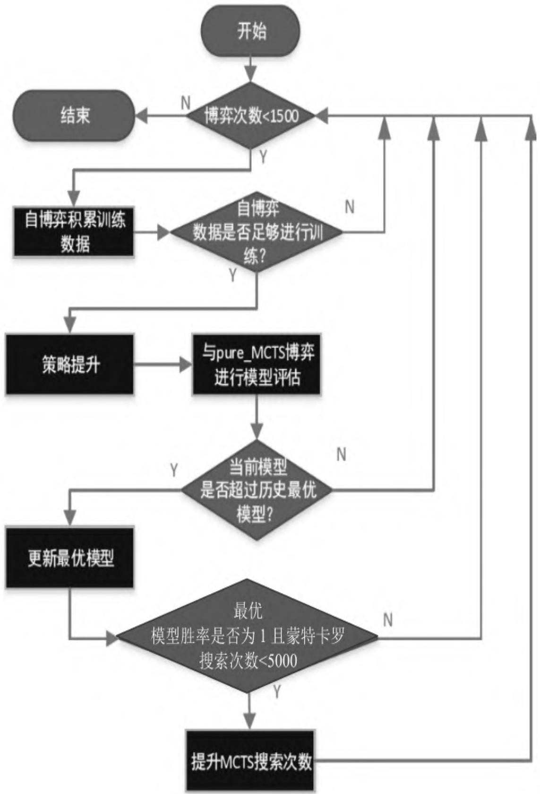
图10.1 Alpha Zero算法流程图框架
围棋、国际象棋等游戏有一些共同的特征，都属于双人、零和（Zero-Sum）博弈、完美信息（Perfect Information）类游戏。其中，“双人”是指游戏参与者为两个人；“零和博弈”是指参与游戏的双方不存在合作的可能，一方的收益额等于另一方的损失额，双方的收益和损失相加总和永远为“零”；“完美信息”是指参与游戏的任何一方在做决策前都掌握了所有相关的历史信息，包括游戏的初始化信息。围棋、国际象棋、黑白棋等游戏都属于完美信息游戏。扑克牌游戏由于游戏一方不知道洗牌后的结果以及对方手中的牌，因此属于非完美信息游戏。完美信息游戏产生的事件序列可以严格地使用马尔可夫过程来建模。Alpha Zero算法充分利用了双人、零和博弈、完美信息类游戏的特点，后文将逐步展开。
如果将诸如围棋、国际象棋、黑白棋、五子棋等棋盘类游戏描述为一个马尔可夫决策过程，那么状态可以由棋盘上每一个位置的落子情况来表示。以一个8×8的五子棋盘为例，描述任何时刻棋盘的状态需要使用64个特征代表棋盘上64个可以落子的位置，每一个位置存在3种可能的情形：黑棋占据、白棋占据或没有一方占据，可以分别用-1、0、1代表这3种可能性。游戏者可能的操作是在棋盘的任何一个位置放置一枚棋子或者放弃落子（Pass）。在不考虑放弃落子情况下，游戏者所有可能的64种行为构成行为空间。在游戏过程中，有些行为是合法的，而有些行为是非法的，不过在行为空间这一层面可以暂不做区分，对这些行为的合法性的判断可留给后续的过程。由于棋类行为的规则明确，只要是执行了一个合法行为那么后续状态就是确定的，因此行为进入对应后续状态的概率为1，而进入其他状态的概率为0。在棋类游戏的过程中，多数情况下参与游戏的双方是无法从每一次落子行为中获得直接奖励的。规则通常规定直到棋局结束系统判定输赢时才认为环境系统给出了奖励。该奖励既是整个状态序列最后一个状态转换的即时奖励，也是该状态序列中唯一一个值可能不为0的奖励。可以设置某一方赢棋获得值为1的奖励、另一方获得-1的奖励，双方和局则奖励为0。由于在非终止的状态转换中奖励值都为0，因此可以不必考虑衰减因子，或者直接设置其值为1。以上就是对一个具有双人、零和博弈、完美信息等特征的棋类游戏的MDP建模描述。
可以看出，这些棋类游戏对应的MDP问题的状态空间规模非常庞大，如果是19×19格的围棋棋盘，可能的状态数目已经是天文数字（3361）。如此大规模的状态空间，如果使用强化学习算法来求解，势必要使用函数的近似。Alpha Zero算法使用卷积神经网络来建立状态价值v和策略p两个函数的近似——，分别用以估计某一状态的价值和该状态下各行为作为最优行为的概率。在面对一个棋局状态s并确定下一个落子应该在什么位置时，Alpha Zero算法使用\(f_\theta\)指导的蒙特卡罗树搜索（MCTS）来模拟人类棋手的思考过程。MCTS给出的各行为概率比单纯从神经网络f得到的策略函数给出的各行为概率更加强大，从这个角度看，MCTS搜索可以被认为是一个强大的策略优化工具。通过搜索来进行自我对弈——使用改善了的基于MCTS的策略来指导行为选择，然后使用棋局结果（哪一方获胜，用-1和1分别表示白方和黑方获胜）来作为标签数据。Alpha Zero算法的主体思想就是在策略迭代过程中重复使用上述两个工具：神经网络f的参数得以更新，这样可以使得神经网络输出的各位置落子概率和当前状态的获胜奖励，更接近于经过改善了的搜索得到的概率以及通过自我对弈得到的棋局结果，后者用 \(Z\) 表示。网络得到的新参数可以在下一次自我对弈的迭代过程中让搜索变得更加强大（见图10.2）。
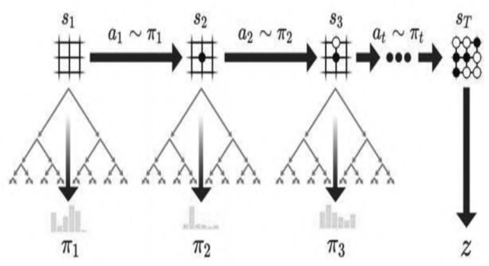
（a）自我博弈
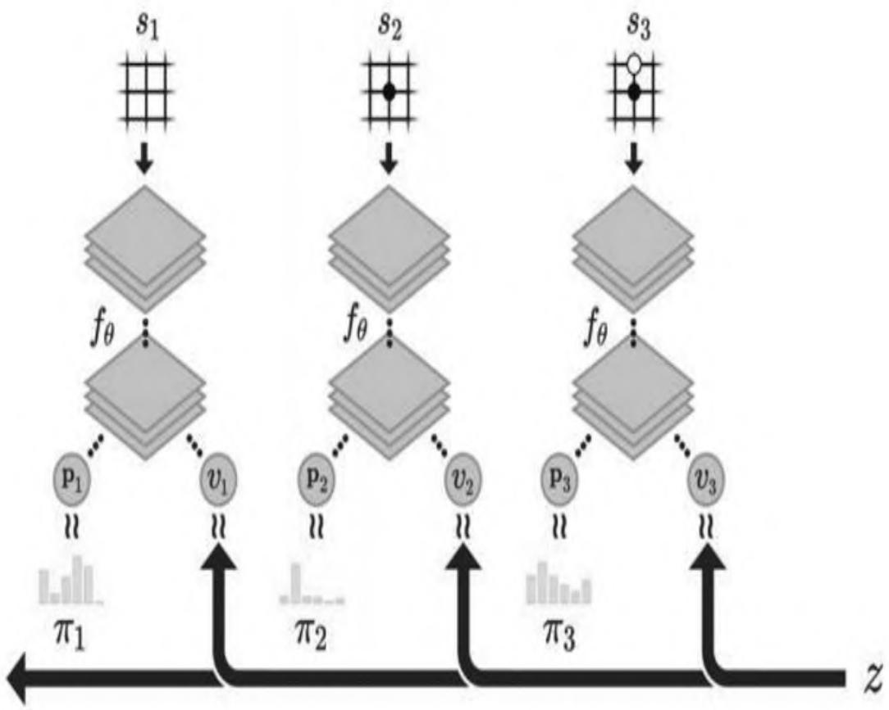
（b）神经网络训练
图10.2 Alpha Zero自我博弈的强化学习
图10.2（a）展示的是算法自我博弈完成一个完整棋局进而产生一个完整的状态序列的过程，T时刻棋局结束，产生了针对某一方的最终奖励Z。在棋局的每一个时刻t，棋盘状态为 \(\mathrm{s_{t}}\) 。在该状态下，通过在神经网络 \(f_{\theta}\) 引导下的一定次数模拟的蒙特卡罗树搜索产生最终的落子行为 \(\mathrm{a_{t}}\) 。图10.2（b）演示的是算法中神经网络的训练过程。神经网络 \(f_{\theta}\) 的输入是某时刻t的棋局状态 \(\mathrm{s_{t}}\) 外加一些历史和额外信息（包括当前棋手信息），输出是行为概率向量 \(\mathrm{p_{t}}\) 和一个标量 \(\mathrm{v_{t}}\) ，前者表示的是在当前棋局状态下采取每种可能落子方式的概率，后者表示当前棋局状态下棋手估计的最终奖励。神经网络的训练目标就是要尽可能地缩小两方面的差距：一是搜索得到的概率向量t和网络输出概率向量 \(\mathrm{\Delta p_{t}}\) 的差距，二是网络预测的当前棋手的最终结果 \(\mathrm{v_{t}}\) 和实际最终结果（用1、-1表示）的差距。网络训练得到的新参数会被用来指导下一轮迭代中自我对弈时的MCTS搜索。
算法中的蒙特卡罗树搜索过程利用了神经网络 \(f_{\theta}\) 给出的近似状态价值，使其在一次搜索内的每一次模拟思考的过程不必考虑终盘，当模拟过程中碰到搜索树内暂不存在的状态时，直接参考网络 \(f_{\theta} ^{\phantom{\dagger}}\) 给出的状态价值来更新本次搜索相关的状态的价值。当一定次数的模拟结束时，蒙特卡罗树搜索依据树内策略结合当前所有行为对应的价值来产生实际的落子行为。这一过程如图10.3所示。
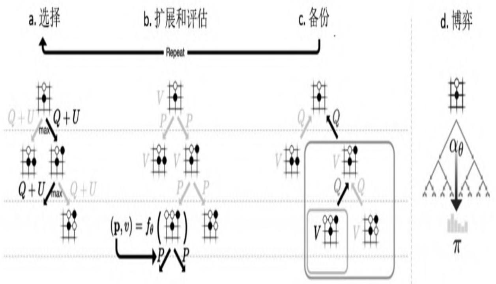
图10.3 Alpha Zero中的蒙特卡罗树搜索
以上是对于Alpha Zero算法的一个快速概览，下文将详细讲解其中的技术细节。
[1] GitHub 源 代 码 项 目 地 址 为https://github.com/junxiosong/AIphaZero_Gomoku。
10.1 自博弈中的蒙特卡罗树搜索¶
首先明确蒙特卡罗树搜索中的几个概念。“对战”指的是游戏一方与自身或其他游戏者进行博弈时实际落子的过程，包括自我对弈和与其他游戏者对弈，它的特点是产生实际的落子行为，其结果是对局结束产生输赢或和局形成一个完整的状态序列。“思考”指的是游戏一方在面对当前棋盘状态时，通过模拟双方虚拟落子来分析棋局演化形势，进而估计当前最优落子行为的过程。对棋局的思考有“深度”和“广度”两个方面：深度指的是在当前状态下模拟的步数多少，观察当前棋局状态的演化过程；广度指的是在当前状态下多个可能的落子行为，观察在当前棋局状态下朝着不同的方向演化。在蒙特卡罗树搜索中，“一次搜索”（One Search）或“一次模拟”（OneSimulation）指的是在当前状态下产生一个较优的行为，并沿着该路径进行一定深度的思考过程。
蒙特卡罗搜索树中的每一个节点s表示棋盘的一个状态，它包含一系列的边（s,a），每一条边对应状态s下的合法行为空间A（s）中的一个行为a，并且每一条边中存储着下列统计数据：
其中，N（s,a）是该边的访问次数，W（s,a）是该边总的行为价值，Q（s,a）是该边的平均行为价值，P（s,a）是该边的先验概率。在棋局进行到某一个状态时，搜索算法会构建一个以当前状态 \(\mathbf{\boldsymbol{s}} _{0}\) 为根节点的搜索树，并进行多次搜索（模拟），作为落子前的一次思考过程。在一次思考过程中会有多次搜索过程，通过搜索了解不同的落子棋局可能的演变过程，其中每一次的搜索从根节点状态 \(s_{0}\) 开始进行前向搜索。它分为三个阶段：
（1）首先是选择（Selection）阶段（见图10.3a）：当前向搜索在第L时间步长到达搜索树的某一叶节点 \(\mathrm{s_{L}}\) 时，对于其中的任何时刻t<L对应的状态 \(\mathbf{\sigma} _{\mathbf{{S} _{t}}}\) ，使用不确定价值行为优先探索中的置信区间上限的方法来生成状态 \(\mathrm{s_{t}}\) 下的模拟行为 \(\mathrm{a_{t}}\) ：
其中，
上式中， \(\mathrm{c_{puct}}\) 是一个决定探索程度的常数，这种搜索控制策略在开始时会倾向于选择那些概率较高且访问次数较低的行为，但是伴随着搜索的深入逐渐过渡到选择最大行为价值的行为。
（2）其次进入叶节点 \(\mathrm{s_{L}}\) 的扩展和评估阶段（Expand and Evaluate）（见图10.3b）：如果该叶节点是代表终止状态的节点，那么该叶节点将不再扩展，同时会直接返回当前棋盘状态对应的价值\(( \boldsymbol{\nu} _{\scriptscriptstyle s_{l}} \in [ - 1 , 0 , 1 ] )\) 的相反数 \(\boldsymbol{\nu} = - \nu_{s_{L}}\) ；如果该叶节点并不代表终止状态，则将节点 \(\mathrm{s_{L}}\) 送入神经网络 \(f_{\theta}\) 中进行评估：
这里使用了数据扩增（Data Augmentation）技术，由于许多棋盘类游戏的状态和对应的行为都可以从前、后、左、右4个方向进行描述，也就是说把棋盘旋转 \(90^{\circ}\) 、 \(180^{\circ}\) 或 \(270^{\circ}\) 再呈现给游戏者，棋盘中棋子的位置对于观察者发生了变化，但是整个棋盘状态的价值并没有发生任何变化。类似地情况还发生在镜像转换时。因此，对于任何一个状态都可以产生8个不同的描述，而这8个不同描述对应的状态价值是一样的。上式中的 \({\mathrm{d}} _{\mathrm{i}} ~ ( \mathrm{s} )\) ）指的就是针对状态s的8个状态描述中的一个 \((i \in [1, \ldots, 8])\) 。在得到网络的评估结果后，节点 \(\mathrm{s_{L}}\) 将会扩展，其下会对每一个合法行为 \(a \in A ( s_{L} )\) 添加一条边 \(( s_{L} , a )\) 连接对应的后续节点，并设置
同时节点 \(\mathrm{s_{L}}\) 的价值为来自神经网络的输出v，该价值将会得到回溯来更新搜索路径中的其他价值。
（3）最后一个阶段是价值的回溯（Backup）（见图10.3d）：对于任何时间步长 \(t < L\) ，搜索路径中的边计数都会增加一次：
同时，某边的总价值 \(W ( s_{t} , a_{t} )\) 和平均价值 \(Q ( s_{t} , a_{t} )\) 也会随着更新：
至此，一次完整的搜索过程就结束了。当进行指定搜索次数的思考后，Alpha Zero将针对当前状态选择实际对战的落子行为，对于当前状态 \(s_{0}\) 下的每一个合法行为a，其被算法选择的概率为：
Alpha Zero算法通过自博弈来生成一定数目的棋局，这些棋局用于进一步训练神经网络逐渐迭代更新网络的参数，并用于指导下一次的蒙特卡罗树搜索，最终使得网络对于状态价值和策略函数的判断越来越准确。
针对某一棋局状态Alpha Zero算法，在产生一个对战行为前会进行1600次（广度）的蒙特卡罗树搜索（模拟），而每次搜索的深度至少是到达树的叶节点，如果该叶节点代表的状态不是终盘，则会通过神经网络给出的估计结果再扩展一层。
蒙特卡罗树搜索的流程类似于算法8所示。算法8在扩展一个叶节点时并没有扩展该叶节点状态下所有可能的合法行为对应的后续状态，只是扩展了一个由神经网络给出的最大价值的后续状态节点。
\begin{algorithm}
\caption{算法 8: 蒙特卡罗树搜索算法}
\begin{algorithmic}
procedure{MCTS}{s, game, net}
if{s is a terminal state}
state return \(-\text{reward of game with terminal state } s\)
endif
if{s is not visited}
state mark state \(s\) as visited
state get probabilities and values of \(s\) from net: \(P[s], v = \text{net.predict}(s)\)
return{-v}
endif
state initialize \(u_{\max} \leftarrow -\infty\), \(a_{\text{best}} \leftarrow -1\)
for{each \(a\) in valid actions \(A\) under state \(s\)}
state \(u \leftarrow Q(s, a) + c_{\text{puct}} P(s, a) \frac{\sqrt{\sum_{a' \in A} N(s, a')}}{1 + N(s, a)}\)
if{\(u > u_{\max}\)}
state \(u_{\max} \leftarrow u\), \(a_{\text{best}} \leftarrow a\)
endif
endfor
state \(a \leftarrow a_{\text{best}}\)
state \(s' \leftarrow\) next state of game on \((s, a)\)
state \(v \leftarrow \text{search}(s', \text{game}, \text{net})\)
state \(Q(s, a) \leftarrow \frac{N(s, a) \cdot Q(s, a) + v}{N(s, a) + 1}\)
state \(N(s, a) \leftarrow N(s, a) + 1\)
return{-v}
endprocedure
\end{algorithmic}
\end{algorithm}
10.2 模型评估中的蒙特卡罗搜索¶
在策略提升后，我们需要对提升后的模型进行评估，以检测模型的性能。本章以基于纯蒙特卡罗搜索方法（记为Pure MCTS）的模型作为评估标准，而对于依赖纯蒙特卡罗搜索方法的模型，其智能程度取决于进行蒙特卡罗树搜索的次数。在评估过程中，该模型适时提升搜索次数，进而得到更加准确的模型评估结果，其流程图如图10.4所示。
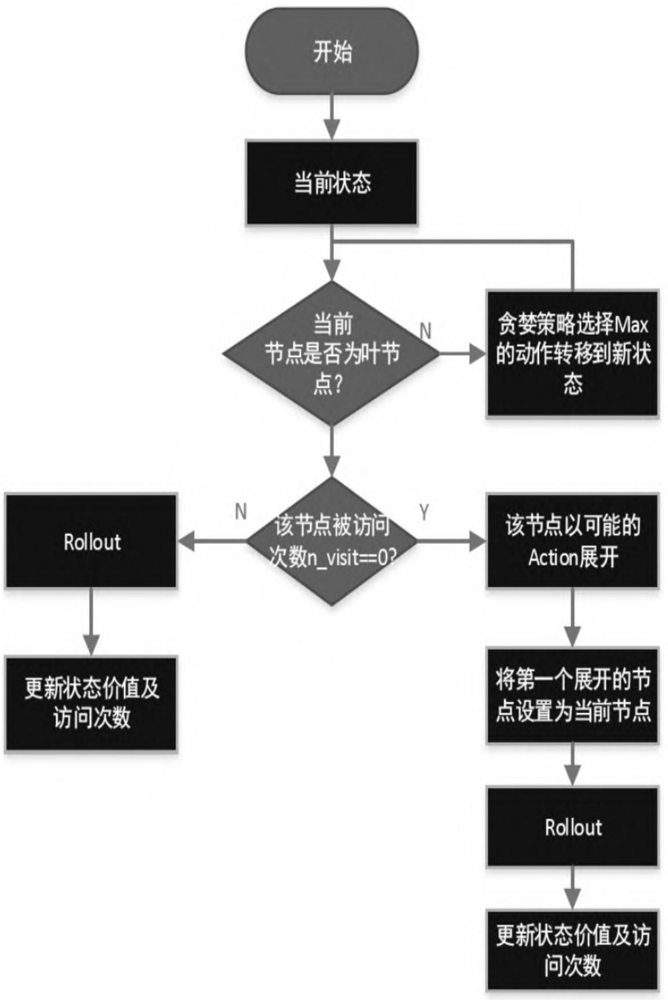
图10.4 Pure MCTS运行流程图
从流程图可以看出，Pure MCTS的大部分过程与10.1节讲述的蒙特卡罗搜索过程一致，只是在几点上有差异，主要体现在对叶节点价值的评估方法上，纯蒙特卡罗方法采用的Rollout策略快速模拟得到叶节点价值，其中Rollout策略为一种判断当前棋局结果的策略，具体方法有多种，本节采用的是在当前棋局状态下，双方完全随机落子，直到博弈结束，如果胜则当前叶节点价值为1，负对应价值为-1，和局则对应价值为0，算法描述详见算法9。
\begin{algorithm}
\caption{算法 9: 纯蒙特卡罗树搜索算法}
\begin{algorithmic}
procedure{pure\_MCTS}{$s_0$}
state create root node $v_0$ with state $s_0$
repeat
state $v_l \leftarrow \text{TreePolicy}(v_0)$
state $\Delta \leftarrow \text{DefaultPolicy}(S(v_l))$
state $\text{BackUp}(v_l, \Delta)$
until{computational budget is used up}
return{$\text{BestChild}(v_0)$}
endprocedure
\end{algorithmic}
\end{algorithm}
Pure MCTS的详细过程（见图10.5）主要分为以下4步：
（1）首先是选择（Selection）阶段：从当前棋盘状态开始，递归采用UCB1算法来选择最优的子节点（计算所得到的UCB1值最大的节
点），直至到达叶节点L。
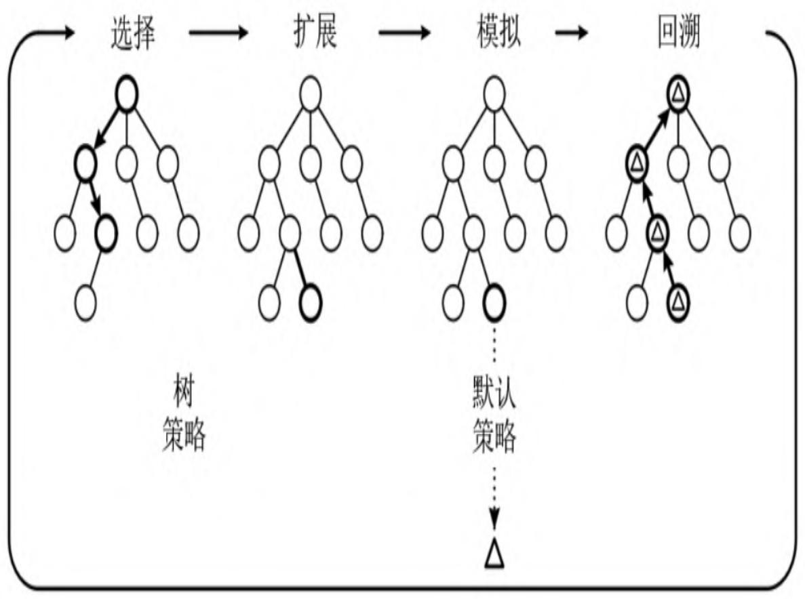
图10.5 Pure MCTS结构示意图
UCB1计算公式为：
其中， \({\overline{{X}}} _{j}\) 为状态 \(\mathrm{s_{j}}\) 下的平均价值， \(\mathrm{n_{j}}\) 为经历状态 \(s_{\mathrm{j}}\) 的次数，n为当前整体模拟的次数。上式中奖励项 \({\overline{{X}}} _{j}\) 意味着鼓励探索带来更高价值的行为，而右边项 鼓励探索之前未被访问过的行为，可以看出此种策略也是前期趋向探索访问次数较低的行为，但是随着探索过程的进行其将过渡到选择最大行为价值的行为。
（2）其次是节点展开（Node Expansion）：如果L不是一个终止节点，那么创建一个或者更多的子节点，对它们进行初始化，设置\(\{T ( s_{\scriptscriptstyle L} ) = 0 , N ( s_{\scriptscriptstyle L} ) = 0 \}\) ，并选择其中的一个节点C。
（3）紧接着是模拟（Simulation）阶段：对上一阶段选择的节点C利用Rollout策略对叶节点价值进行评估，双方快速随机落子直至博弈结束。
（4）最后一个阶段为价值的反向传播（Backpropagation）过程回溯：对上述博弈结果进行统计。若获胜，则当前节点C的价值更新为1；若输，则价值更新为-1；若为和局，则价值更新为0。同时对于任何时间步长t<L，递归地更新当前的行为序列。
当前行为序列中边的计数均增加一次：
同时状态价值也进行更新：
其中，\(v\) 为Rollout策略得到的叶节点价值。
至此，一次完整的搜索过程就结束了。当进行指定搜索次数的思考后，Pure MCTS将针对当前状态选择实际落子行为，对于当前状态s0下的每一个合法行为a，其选择在蒙特卡罗搜索树下访问次数最多的行为。
Pure MCTS算法通过采用基本的蒙特卡罗搜索算法进行落子，用于评估策略提升后的Alpha Zero模型，由于开始的Alpha Zero模型水平较低，因而也采用较低搜索次数（初始时设置为1000）的Pure MCTS与其博弈，通过10局的博弈，以胜率来评估策略提升后的Alpha Zero模型。发现Alpha Zero模型胜率已经到达100%，无法进一步评估模型的性能时，可以通过加大Pure MCTS的搜索次数（每次增加1000）来相应提升其智能程度用于评估，从而得到更好的评估模型效果。
用图10.6对先前讲解的两种MCTS形式进行对比，从中也能很直观地发现两点主要区别。
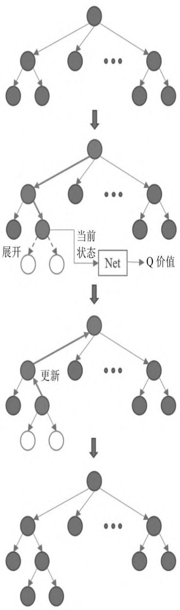
（a）Alpha Zero自博弈MCTS
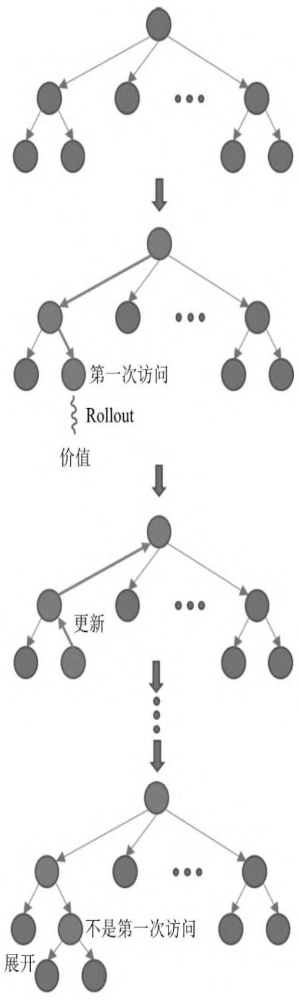
（b）PureMCTS
图10.6 Alpha Zero自博弈MCTS与Pure MCTS运行对比
（1）在Alpha Zero自博弈的MCTS中，当采取贪婪策略递归到叶节点时，若该叶节点博弈未结束，则直接展开，然而Pure MCTS抵达叶节点时，在博弈未结束的基础上还需要检测是否是第一次抵达该叶节点，如果不是第一次，就对叶节点进行展开，否则不展开。 （2）在对叶节点的价值评估上，Alpha Zero中的MCTS将叶节点的状态输入到策略价值网络（后面内容会详细讲解）中，直接得到当前叶节点的价值，而Pure MCTS是利用Rollout策略，即在当前棋盘状态基础上进行快速随机落子直至博弈结束，将博弈后的结果作为该叶节点的价值，之后对Rollout模拟的过程进行清除，如此往复。
10.3 策略价值网络结构及策略提升¶
在前一版本的AlphaGo中，其策略网络与价值网络是分开的，然而Alpha Zero中的两个网络是合并的，两个网络通过相同的多层残差卷积神经网络，在尾部之后分别连接对应策略网络的Policy head及对应价值网络的Value head，其整体结构图如图10.7所示。
The Deep Neural Network Architecture¶
How AlphaGo Zero assesses new positions¶
The network
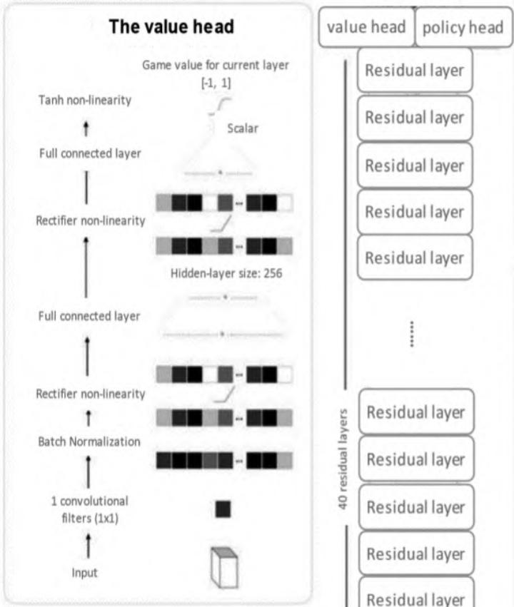
The policy head
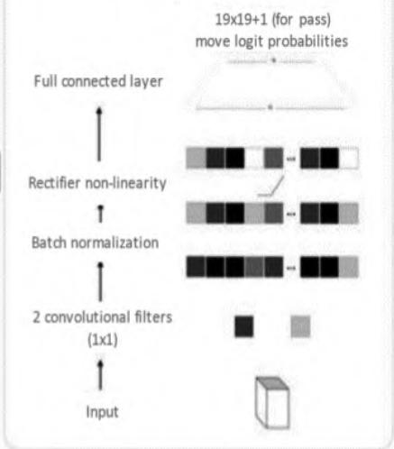
A convolutional layer
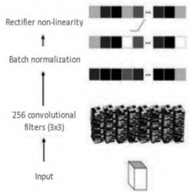
A residual layer
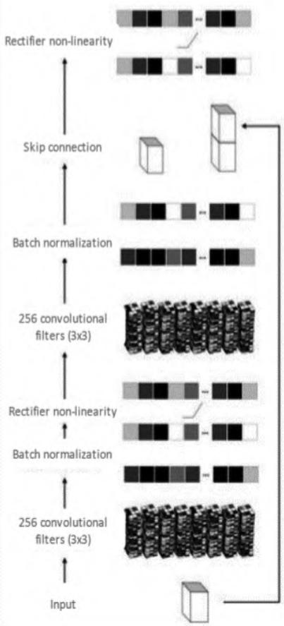
图10.7 策略价值网络模型结构图
神经网络的输入为17张19×19尺寸堆叠的二进制编码图像，其中8个二进制编码的图像 \(\mathrm{X_{t}}\) 表示当前玩家的棋面落子情况（若棋面交叉点位置含有玩家颜色的棋子，则 \(X_{t} ^{i} = 1\) ，否则 \(X_{t} ^{i} = 0 )\) ）。另外的8个二进制编码图 \(\mathrm{Y} _{\mathrm{t}}\) 像表示另一玩家的棋面落子情况，最后的1个二进制图像表示轮到哪一个玩家落子，其全为0或者全为1，用于表示博弈的两方，这17张二进制图像 \(s_{t} = [ X_{t} , Y_{t} , X_{t - 1} , Y_{t - 1} , \cdots , X_{t - 7} , Y_{t - 7} , C ]\) 堆叠在一起作为神经网络的输入。注意，这里的时间信息 \((X_t, Y_t)\) 都是必要的，因为围棋不能完全从当前的棋面提取全面的信息，在围棋中重复的行为是禁止的。同样，特征也是必需的，因为只看棋面无法获知轮到哪一方进行落子。
从中可以看出，输入的特征 \(\mathrm{s_{t}}\) 由一个残差网络处理，该残差网络由1个卷积块和39个残差块组成。其中，卷积块由一个通道数为256、卷积核大小为 \(3 \times 3\) 、步长为1的卷积层以及BN层和非线性修正单元ReLU组成；每一个残差块由两个卷积层、BN层组成，最后叠加了一个skipconnection恒等变换层，并没有引入额外的参数和计算复杂度，却很好地克服了网络信息随着深度退化的问题。
残差网络的输出分别通过两个独立的Policy head与Value head计算策略及价值。其中，Policy head依次运用了通道数为2、核大小为\(1 \times 1\) 、步长为1的卷积层，BN层，非线性修正单元ReLU，以及一个输出个数为 \(19 \times 19 + 1 = 362\)（\(19 \times 19\) 代表棋盘上落子位置个数，1表示放弃落子）的全连接层；Value head依次运用了通道数为1、核大小为1×1、步长为1的卷积层，BN层，非线性修正单元ReLU，以及一个全连接层（隐藏层神经元个数为256，输出层神经元个数为1），最后利用非线性函数\(\tanh\)对输出的标量值进行处理，以确保其值落在 \([-1, 1]\) 区间。
从整体上来说，在Alpha Zero中构建网络模型的深度上，残差块个数为20或40，分别具有39或79个参数层，同时Policy head有额外的2层参数层、Value head有3层的参数层。
10.4 编程实践：Alpha Zero算法在五子棋上的实现¶
考虑到DeepMind针对围棋开发的Alpha Zero模型庞大，无法在自己的电脑上得到很好的结果复现以及训练Alpha Zero算法，这里选择更加简单的五子棋作为对象，代码选自GitHub上非常流行的开源实现代码AlphaZero_Gomoku，其基于Python语言开发，在网络模型搭建上有TensorFlow、PyTorch等多种实现方式。如果自己的电脑性能较低，可以设置相对较小的棋盘格子数（初期设置为8）。该代码实现了Alpha Zero算法中的核心想法，主要包括棋盘环境搭建、应用在自博弈和模型评估两种场景下的蒙特卡罗树搜索的实现与策略价值网络的搭建，以及策略提升，实际测试效果较好，具有一定的落子水平。本节将对其中涉及的关键代码进行详细解析。
10.4.1 从零开始搭建棋盘环境¶
我们以尺寸为8×8大小的五子棋棋盘为例，由于相比围棋而言，五子棋落子个数较少，因而在此没有放弃落子这个状态，其状态空间总数为8×8=64。在棋盘构建上，实现代码在game.py文件中。代码实现两个类：一个是Board类，实现棋盘环境的基本功能，另一个是Game类，实现将棋局可视化、双方博弈及自博弈功能。棋盘设计的主要思想是，将二维的8×8=64个网格以一定顺序映射成一维长度为64的列表（list）数据结构，在一维的列表上进行一些相应的数据处理，最后进行反映射，回到原先二维8×8的棋盘网格上，并进行相应的可视化。
本节重点分析Board类的实现，主要结构如图10.8所示。
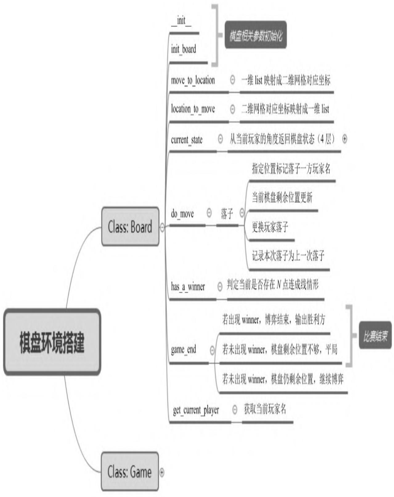
图10.8 棋盘环境搭建Board类主要组成结构图
其中，__init__及init_board函数均为棋盘一些相关参数的初始化，包括棋盘尺寸的设置、约定几个子连成线为获胜、哪个玩家先进行落子等；move_to_location函数（也称为方法）为之前提到的一维列表到二维网格的映射实现，而location_to_move函数为其逆过程，直观实现如图10.9所示。
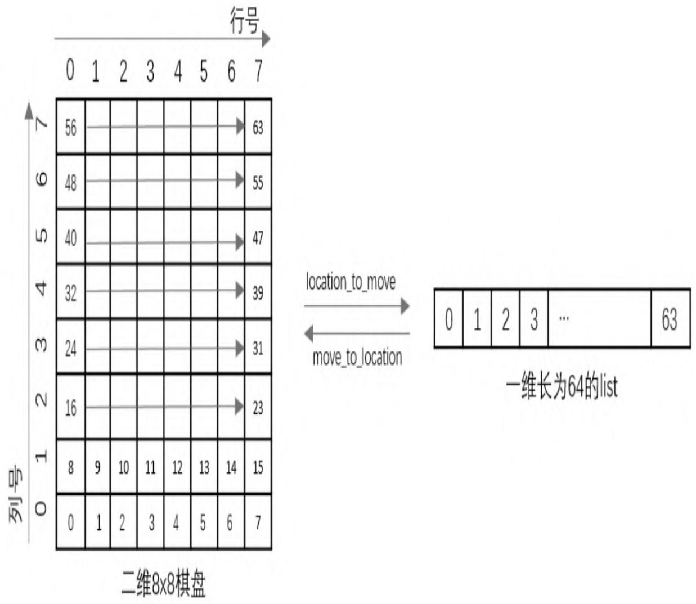
图10.9 一维列表（list）和二维网格的直观实现示意图
在图10.9中，左边为二维8×8棋盘，网格中的数字所在的位置对应右边相同数字所在列表的位置中，如一维列表中的第三个位置对应二维8×8棋盘的位置（0,3），它们之间的两个箭头表示两种计量方式的相互映射转换关系，具体代码实现后面会详细描述。
以move_to_location函数为例，其代码实现如下：
def move_to_location(self, move):
h = move // self.width
w = move % self.width
return [h, w]
def location_to_move(self, location):
if len(location) != 2:
return -1
h = location[0]
w = location[1]
move = h * self.width + w
if move not in range(self.width * self.height):
return -1
return move
其中，current_state函数上实现了状态state的二进制图像描述，从当前玩家的角度得到棋盘的状态，值得注意的是代码中状态state的定义与Alpha Zero中的状态state定义有较大的出入，由于五子棋不存在落子被对方吃掉的情况，因而无须向Alpha Zero那样要求双方有各自前8步的棋盘状态，这里定义的state仅由4层8×8的图像叠加而成，其中两层分别对应当前棋盘上各自的落子情况（落子位置为
1，未落子位置为0），并且另外一层为上一步的落子信息以及最后一层代表落子方的全0或全1的图像层。其代码实现如下：
def current_state(self):
"""从当前玩家的角度返回棋盘的状态，其中状态尺寸：4*宽*高
"""
square_state = np.zeros((4, self.width, self.height))
if self.states:
moves, players =
np.array(list(zip(*self.states.items()))
move_curr = moves[players == self.current_player]
move_oppo = moves[players != self.current_player]
square_state[0][move_curr // self.width, move_curr % self.height] = 1.0
square_state[1][move_oppo // self.width, move_oppo % self.height] = 1.0
# 记录上一次移动的位置
square_state[2][self.last_move // self.width, self.last_move % self.height] = 1.0
if len(self.states) % 2 == 0:
square_state[3][:, :] = 1.0 # indicate the colour to play
return square_state[:, :::-1, :]
其中，do_move函数主要实现在指定位置上标记落子方的玩家名，然后对落子后的棋盘进行更新，得到当前棋盘可以落子的位置，接着更换玩家进行落子，同时将此次落子记录下来，用于组成状态state。该函数实现较为简单，在此就不进行展示了。has_a_winner函数为对当前棋盘的双方落子情况进行评估，看某一方是否能够实现N（例如
N=5）个点连成一条线。直观意义上讲，五子棋连成线的方式只有图10.10中的4种方式，分别对这4种方式进行代码实现即可。
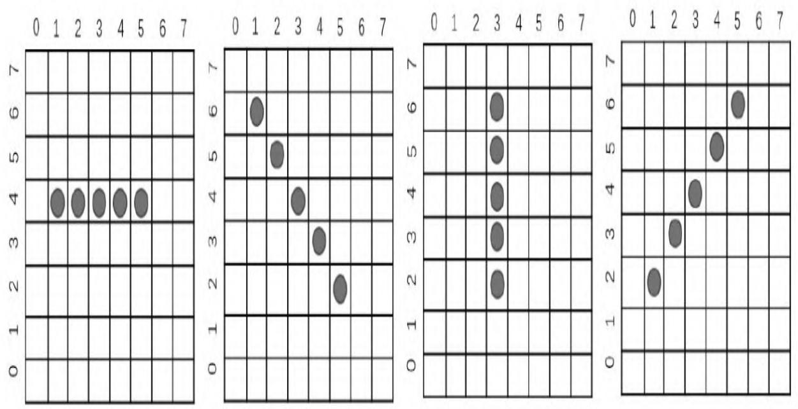
图10.10 五子棋中4种获胜的情形
分别对4种情况编写代码，具体如下：
def has_a_winner(self):
width = self.width
height = self.height
states = self.states
n = self.n_in_row
moved = list(set(range(width * height)) - set(self.availables))
# 如果双方落子总数过少，肯定不存在某一方获胜，需要继续博弈
if len(moved) < self.n_in_row + 2:
return False, -1
for m in moved:
h = m // width
w = m % width
player = states[m]
# 分别对应图中4种获胜情形
if (w in range(width - n + 1) and
len(set(states.get(i, -1) for i in range(m,
m + n))) == 1):
return True, player
if (h in range(height - n + 1) and
len(set(states.get(i, -1) for i in
range(m, m + n * width,
width))) == 1):
return True, player
if (w in range(width - n + 1) and
h in range(height - n + 1) and
len(set(states.get(i, -1) for i in
range(m,
m + n * (width + 1),
width + 1))) == 1):
return True, player
if (w in range(n - 1, width) and
h in range(height - n + 1) and
len(set(states.get(i, -1) for i in
range(m,
m + n * (width - 1),
width - 1))) == 1):
return True, player
return False, -1
其中，game_end函数主要利用has_a_winner判定是否出现获胜方，如果出现，则博弈结束，同时输出获胜方名字；如果未出现获胜方，但是棋盘没有多余位置可以落子，则为平局；如果未出现获胜方，并且棋盘仍然有剩余位置，则继续博弈。
其中，get_current_player函数获取当前玩家名，代码很简单，在此不过多介绍。
接着重点分析Game类的实现，主要结构如图10.11所示。
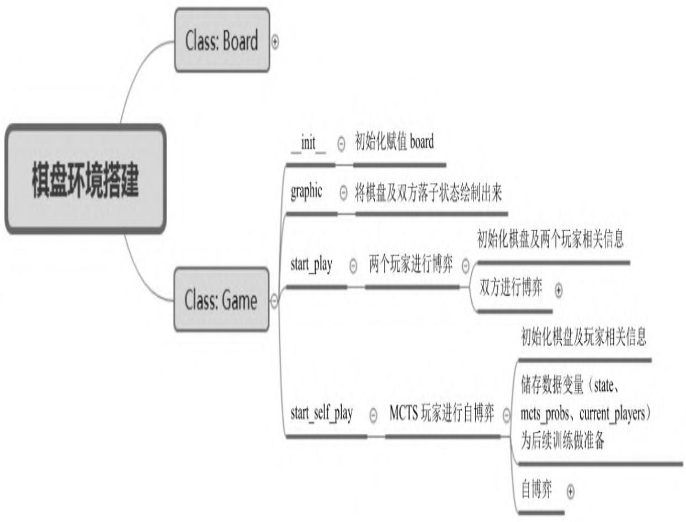
图10.11 棋盘环境搭建Game类主要组成结构图
其中，__int__函数在先前构建board类的基础上进行初始化；graphic函数将当前双方落子情况直观地展现出来（分别利用符号'O'与'X'代表两方玩家），直观实现效果图如图10.12所示。
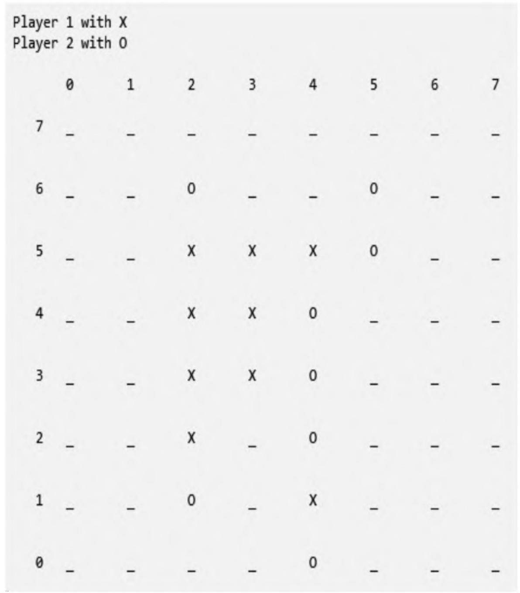
图10.12 可视化函数graphic代码实现效果
graphic函数的实现代码如下：
def graphic(self, board, player1, player2):
"""绘制棋盘与当前博弈落子信息"""
width = board.width
height = board.height
print("Player", player1, "with X".rjust(3))
print("Player", player2, "with O".rjust(3))
print()
for x in range(width):
print("{0:8}".format(x), end='')
print('\r\n')
for i in range(height - 1, -1, -1):
print("{0:4d}".format(i), end='')
for j in range(width):
loc = i * width + j
p = board.states.get(loc, -1)
if p == player1:
print('X'.center(8), end='')
elif p == player2:
print('O'.center(8), end='')
else:
print('_'.center(8), end='')
print('\r\n\r\n')
其中，start_play函数实现通用的双方博弈功能，在后期用来评估策略提升后的模型性能，其中一方玩家设定为依赖纯蒙特卡罗搜索树进行博弈，而另外一方玩家为策略提升之后的模型，用于检测评估策略提升带来的效果，从而通过不断评估得到历史最优模型。其函数输入的为指定策略的两方玩家，依靠自身策略分别进行落子，最终输出获胜一方。
代码实现如下：
def start_play(self, player1, player2, start_player=0, is_shown=1):
"""在两个玩家间展开博弈"""
if start_player not in (0, 1):
raise Exception('start_player should be either 0 \
(player1 first) or 1 (player2 first)')
self.board.init_board(start_player)
p1, p2 = self.board'DL players
player1.set_player_ind(p1)
player2.set_player_ind(p2)
players = {p1: player1, p2: player2}
if is_shown:
self.graphic(self.board, player1.player, player2.player)
while True:
current_player =
self.board.get_current_player()
player_in_turn = players[current_player]
"""依赖自身策略获取下一步落子行为"""
move = player_in_turn.get_action(self.board)
self.board.do_move(move)
if is_shown:
self.graphic(self.board, player1.player, player2.player)
"""每一次落子之后都检查当前比赛是否结束"""
end, winner = self.board.game_end()
if end:
if is_shown:
if winner != -1:
print("Game end. Winner is", players[winner])
else:
print("Game end. Tie")
return winner
其中，start_self_play函数实现自博弈功能，主要用于前期搜集训练数据。从图10.1的算法程序框图可以看出，Alpha Zero算法前期采用蒙特卡罗算法不断进行自博弈行为，并且记录每一次博弈的落子情况、状态及最终的比赛结果，直到积累的训练数据规模到达训练所需要的次数，就停止自博弈行为。该函数输入为采用相同策略（如均采用同种蒙特卡罗搜索策略）的两方玩家，该函数输出获胜方及博弈中记录的状态。
代码实现如下：
def start_self_play(self, player, is_shown=0, temp=1e-3):
"""对MCTS玩家进行自博弈，重复利用搜索树同时存储自博弈数据（state, mcts_probs, z）用于后期训练
"""
self.board.init_board()
p1, p2 = self.board'Dragers
states, mcts_probs, current_players = [], [], []
while True:
move, move_probs =
player.get_action(self.board,
temp=temp,
return_prob=1)
# 存储当前数据用于后续训练过程
states.append(self.board.current_state())
mcts_probs.append(move_probs)
current_players.append(self.board.current_player)
# 进行落子行为
self.board.do_move(move)
if is_shown:
self.graphic(self.board, p1, p2)
end, winner = self.board.game_end()
if end:
# 从玩家角度看每个状态的赢家
winners_z = np.zeros(len(current ..., players))
if winner != -1:
winners_z[np.array(current ..., players) == winner] = 1.0
winners_z[np.array(current ..., players) != winner] = -1.0
# 重置MCTS根节点
player.reset_player()
if is_shown:
if winner != -1:
print("Game end. Winner is player:", winner)
else:
print("Game end. Tie")
return winner, zip(states, mcts_probs, winners_z)